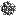

How Ants Locate Food - Simulation (9th grade science project)
(Heavily) Inspired by Sebastian Lague's awesome video
Show home
pheromones
Show food
pheromones
Show colony
sensor range
Show food
sensor range
Toggle Food Brush

Note: Hold your mouse down when using the spray food brush, perform single clicks when using the point brush.
I also made two more versions of this simulation: one where the ants just walk randomly (though they
have a better food-detection range) and one where some of the ants follow pheromones while the other ants follow
those.
But these other versions are pretty boring, and I don't want to waste time cleaning the horrible code I
wrote for them, so I probably won't add them.